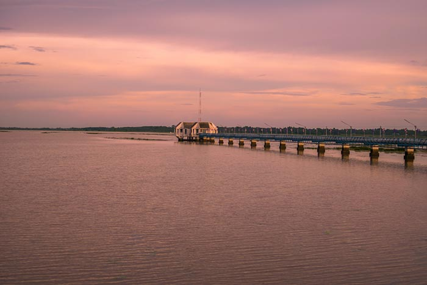

แนะนำสถานที่ท่องเที่ยวในจังหวัดสุรินทร์
1. อนุสาวรีย์พระยาสุรินทรภักดีศรีณรงค์จางวาง (ปุม) อนุสาวรีย์พระยาสุรินทรภักดีศรีณรงค์จางวาง (ปุม) ตั้งอยู่บริเวณใจกลางเมืองของเมืองสุรินทร์ เป็นสถานที่ตั้งรูปหล่อของพระยาสุรินทร์ภักดีศรีณรงค์จางวาง (ปุม) ผู้วางรากฐานการก่อตั้งเมืองสุรินทร์ ด้านหน้าของรูปหล่อมีรูปปั้นงาช้างสีขาวขนาดใหญ่ขนาบทั้ง 2 ข้าง เป็นสัญลักษณ์ที่สื่อว่าเมืองสุรินทร์เป็นเมืองช้างอย่างแท้จริง
2.ปราสาทศีขรภูมิ ปราสาทศีขรภูมิ ตั้งอยู่ที่บ้านปราสาท ตำบลระแงง อำเภอศีขรภูมิ เป็นปราสาทศิลปะขอมแบบบาปวน สร้างขึ้นตั้งแต่ในช่วงพุทธศตวรรษที่ 17 มีลักษณะเป็นปรางค์หมู่ 5 องค์ มีแผนผังเป็นรูปสี่เหลี่ยมจัตุรัส โดยมีปราสาทประธาน 1 องค์อยู่ตรงกลาง และมีปราสาทบริวาร 4 องค์ล้อมอยู่ทั้ง 4 ทิศ ทั้งหมดตั้งอยู่บนฐานศิลาแลงเดียวกัน และมีสระน้ำล้อมรอบเว้นทางเข้าด้านหน้าด้านหลัง
3.วนอุทยานแห่งชาติพนมสวาย วนอุทยานแห่งชาติพนมสวาย ตั้งอยู่ที่ตำบลนาบัว อำเภอเมือง มีลักษณะเป็นภูเขาเตี้ย ๆ มียอดเขาอยู่ 3 ยอด คือ ยอดเขาชาย (พนมเปราะ) ยอดเขาหญิง (พนมสรัย) และยอดเขาคอก (พนมกรอล) โดยแต่ละยอดจะมีวัดตั้งอยู่ ยอดเขาชาย เป็นที่ตั้งของวัดพนมสวาย สูงประมาณ 210 เมตร มีบันไดก่ออิฐถือปูนขึ้นไปจนถึงวัด และยังมีระฆังจำนวน 1, 080 ใบให้ตลอดเส้นทาง ยอดเขาหญิง เป็นที่ตั้งของวัดพนมศิลาราม สิ่งที่โดดเด่นคือ พระพุทธรูปองค์ขนาดกลางประดิษฐานบนยอดเขาสูงจากระดับน้ำทะเลราว ๆ 228 เมตร ส่วนยอดเขาคอก เป็นที่ตั้งของศาลาอัฏฐะมุข ด้านในมีพระพุทธบาทจำลอง ใกล้กันนั้นมีสถูปที่เก็บอัฐิธาตุพระราชวุฒาจารย์ หรือหลวงปู่ดูลย์ อตุโล พระเกจิสายวิปัสสนา และศาลเจ้าแม่กวนอิม ให้ได้มากราบไหว้ขอพรกันด้วย
4.ทะเลสาบทุ่งกุลา ทะเลสาบทุ่งกุลา ตั้งอยู่ที่ตำบลไพรขลา อำเภอชุมพลบุรี อดีตพื้นที่แห้่งนี้ได้เคยเป็นส่วนหนึ่งของทุ่งกุลาร้องไห้ พื้นที่ที่แห้งแล้งแทบไม่มีน้ำเลยตลอดทั้งปี แต่เมื่อพ.ศ. 2550 ได้มีการขุดลอกพื้นที่ทำเป็นแก้มลิงกักเก็บน้ำไว้ ต่อมากรมชลประทานได้ทำการขุดพื้นที่กว่า 750 ไร่ ให้เป็นหนองน้ำขนาดใหญ่ ก็ทำให้สามารถกักเก็บน้ำไว้ได้มากมาย กลายเป็นแหล่งน้ำสำคัญในการทำเกษตรกรรมพลิกฟื้นพื้นที่รอบด้านให้กลับมาอุดมสมบูรณ์อีกครั้ง และก็ได้เรียกหนองน้ำนี้ว่า ทะเลสาบทุ่งกุลา ปัจจุบันทะเลสาบทุ่งกุลา ได้กลายเป็นสถานที่ท่องเที่ยวพักผ่อนคลายร้อนยอดนิยมของชาวสุรินทร์และนักท่องเที่ยวในพื้นที่อีสานใต้ โดยมีแพไม้ไผ่ให้นักท่องเที่ยวได้ไปนั่งชมวิวชิล ๆ ก็ใครอยากเล่นน้ำเย็นฉ่ำใสแจ๋วกลางทะเลสาบ เจ้าหน้าที่ก็ยินดีลากแพไปให้กระโดดน้ำกันอย่างเมามัน นอกจากนี้ยังมีห่วงยาง เรือเป็ดให้บริการ พร้อมทั้งร้านค้า ร้านอาหารหลากหลายแบบให้ได้กินเพลิน ๆ กันด้วย ดูรายละเอียดเพิ่มเติมได้ที่ เฟซบุ๊ก ทะเลสาบทุ่งกุลา บ้านโพนม่วง - ม่วงสวรรค์ ต.ไพรขลา อ.ชุมพลบุรี จสุรินทร์

5.อ่างเก็บน้ำห้วยเสนง อ่างเก็บน้ำห้วยเสนง ตั้งอยู่ที่ตำบลเฉนียง อำเภอเมือง มีลักษณะเป็นอ่างเก็บน้ำขนาดกว้างใหญ่ บรรยากาศผ่อนคลาย ด้วยรอบ ๆ ของอ่างเก็บน้ำเต็มไปด้วยต้นไม้นานาพรรณ วิวทิวทัศน์สวยงาม มีสันเขื่อนให้ได้มาเดินเล่นชมวิวกันเพลิน ๆ โดยเฉพาะยามเย็นที่สามารถมาชมวิวพระอาทิตย์ตกดินได้ด้วย ลมพัดเย็น ๆ บรรยากาศโรแมนติกไม่เบาเลยล่ะ พร้อมทั้งยังมีร้านอาหารให้บริการ สามารถมานั่งกินข้าวเย็นกับวิวสวย ๆ กันได้ทุกวัน
©จังหวัดสุรินทร์มีที่ท่องเที่ยวมากมาย มาเที่ยวกันเยอะๆนะครับ
Welcome To Surin❤
By- Kritsada Saengkaeosuk 6352410002